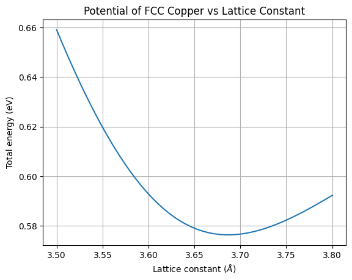

ALIGNN Tutorial#
Install ALIGNN:
pip install alignn
from alignn.ff.ff import AlignnAtomwiseCalculator,default_path
model_path = default_path()
calc = AlignnAtomwiseCalculator(path=model_path)
A module that was compiled using NumPy 1.x cannot be run in
NumPy 2.2.6 as it may crash. To support both 1.x and 2.x
versions of NumPy, modules must be compiled with NumPy 2.0.
Some module may need to rebuild instead e.g. with 'pybind11>=2.12'.
If you are a user of the module, the easiest solution will be to
downgrade to 'numpy<2' or try to upgrade the affected module.
We expect that some modules will need time to support NumPy 2.
Traceback (most recent call last): File "/usr/lib/python3.10/runpy.py", line 196, in _run_module_as_main
return _run_code(code, main_globals, None,
File "/usr/lib/python3.10/runpy.py", line 86, in _run_code
exec(code, run_globals)
File "/media/colin/Shared/colin/git/materials-ml-workshop/env/lib/python3.10/site-packages/ipykernel_launcher.py", line 17, in <module>
app.launch_new_instance()
File "/media/colin/Shared/colin/git/materials-ml-workshop/env/lib/python3.10/site-packages/traitlets/config/application.py", line 1043, in launch_instance
app.start()
File "/media/colin/Shared/colin/git/materials-ml-workshop/env/lib/python3.10/site-packages/ipykernel/kernelapp.py", line 725, in start
self.io_loop.start()
File "/media/colin/Shared/colin/git/materials-ml-workshop/env/lib/python3.10/site-packages/tornado/platform/asyncio.py", line 195, in start
self.asyncio_loop.run_forever()
File "/usr/lib/python3.10/asyncio/base_events.py", line 603, in run_forever
self._run_once()
File "/usr/lib/python3.10/asyncio/base_events.py", line 1909, in _run_once
handle._run()
File "/usr/lib/python3.10/asyncio/events.py", line 80, in _run
self._context.run(self._callback, *self._args)
File "/media/colin/Shared/colin/git/materials-ml-workshop/env/lib/python3.10/site-packages/ipykernel/kernelbase.py", line 513, in dispatch_queue
await self.process_one()
File "/media/colin/Shared/colin/git/materials-ml-workshop/env/lib/python3.10/site-packages/ipykernel/kernelbase.py", line 502, in process_one
await dispatch(*args)
File "/media/colin/Shared/colin/git/materials-ml-workshop/env/lib/python3.10/site-packages/ipykernel/kernelbase.py", line 409, in dispatch_shell
await result
File "/media/colin/Shared/colin/git/materials-ml-workshop/env/lib/python3.10/site-packages/ipykernel/kernelbase.py", line 729, in execute_request
reply_content = await reply_content
File "/media/colin/Shared/colin/git/materials-ml-workshop/env/lib/python3.10/site-packages/ipykernel/ipkernel.py", line 422, in do_execute
res = shell.run_cell(
File "/media/colin/Shared/colin/git/materials-ml-workshop/env/lib/python3.10/site-packages/ipykernel/zmqshell.py", line 540, in run_cell
return super().run_cell(*args, **kwargs)
File "/media/colin/Shared/colin/git/materials-ml-workshop/env/lib/python3.10/site-packages/IPython/core/interactiveshell.py", line 3009, in run_cell
result = self._run_cell(
File "/media/colin/Shared/colin/git/materials-ml-workshop/env/lib/python3.10/site-packages/IPython/core/interactiveshell.py", line 3064, in _run_cell
result = runner(coro)
File "/media/colin/Shared/colin/git/materials-ml-workshop/env/lib/python3.10/site-packages/IPython/core/async_helpers.py", line 129, in _pseudo_sync_runner
coro.send(None)
File "/media/colin/Shared/colin/git/materials-ml-workshop/env/lib/python3.10/site-packages/IPython/core/interactiveshell.py", line 3269, in run_cell_async
has_raised = await self.run_ast_nodes(code_ast.body, cell_name,
File "/media/colin/Shared/colin/git/materials-ml-workshop/env/lib/python3.10/site-packages/IPython/core/interactiveshell.py", line 3448, in run_ast_nodes
if await self.run_code(code, result, async_=asy):
File "/media/colin/Shared/colin/git/materials-ml-workshop/env/lib/python3.10/site-packages/IPython/core/interactiveshell.py", line 3508, in run_code
exec(code_obj, self.user_global_ns, self.user_ns)
File "/tmp/ipykernel_24659/1719054429.py", line 1, in <module>
from alignn.ff.ff import AlignnAtomwiseCalculator,default_path
File "/media/colin/Shared/colin/git/materials-ml-workshop/env/lib/python3.10/site-packages/alignn/ff/ff.py", line 33, in <module>
from alignn.graphs import Graph
File "/media/colin/Shared/colin/git/materials-ml-workshop/env/lib/python3.10/site-packages/alignn/graphs.py", line 19, in <module>
import dgl
File "/media/colin/Shared/colin/git/materials-ml-workshop/env/lib/python3.10/site-packages/dgl/__init__.py", line 18, in <module>
from . import (
File "/media/colin/Shared/colin/git/materials-ml-workshop/env/lib/python3.10/site-packages/dgl/dataloading/__init__.py", line 4, in <module>
from .base import *
File "/media/colin/Shared/colin/git/materials-ml-workshop/env/lib/python3.10/site-packages/dgl/dataloading/base.py", line 7, in <module>
from ..convert import heterograph
File "/media/colin/Shared/colin/git/materials-ml-workshop/env/lib/python3.10/site-packages/dgl/convert.py", line 11, in <module>
from .heterograph import combine_frames, DGLBlock, DGLGraph
File "/media/colin/Shared/colin/git/materials-ml-workshop/env/lib/python3.10/site-packages/dgl/heterograph.py", line 40, in <module>
class DGLGraph(object):
File "/media/colin/Shared/colin/git/materials-ml-workshop/env/lib/python3.10/site-packages/dgl/heterograph.py", line 3837, in DGLGraph
self, transpose=False, ctx=F.cpu(), scipy_fmt=None, etype=None
File "/media/colin/Shared/colin/git/materials-ml-workshop/env/lib/python3.10/site-packages/dgl/backend/pytorch/tensor.py", line 34, in cpu
return th.device("cpu")
/media/colin/Shared/colin/git/materials-ml-workshop/env/lib/python3.10/site-packages/dgl/backend/pytorch/tensor.py:34: UserWarning: Failed to initialize NumPy: _ARRAY_API not found (Triggered internally at ../torch/csrc/utils/tensor_numpy.cpp:84.)
return th.device("cpu")
---------------------------------------------------------------------------
ImportError Traceback (most recent call last)
Cell In[1], line 1
----> 1 from alignn.ff.ff import AlignnAtomwiseCalculator,default_path
3 model_path = default_path()
4 calc = AlignnAtomwiseCalculator(path=model_path)
File /media/colin/Shared/colin/git/materials-ml-workshop/env/lib/python3.10/site-packages/alignn/ff/ff.py:34
32 from jarvis.db.jsonutils import loadjson
33 from alignn.graphs import Graph
---> 34 from alignn.models.alignn_atomwise import ALIGNNAtomWise, ALIGNNAtomWiseConfig
35 from jarvis.analysis.defects.vacancy import Vacancy
36 import numpy as np
File /media/colin/Shared/colin/git/materials-ml-workshop/env/lib/python3.10/site-packages/alignn/models/alignn_atomwise.py:14
11 import torch
13 # from dgl.nn.functional import edge_softmax
---> 14 from pydantic.typing import Literal
15 from torch import nn
16 from torch.nn import functional as F
ImportError: cannot import name 'Literal' from 'pydantic.typing' (/media/colin/Shared/colin/git/materials-ml-workshop/env/lib/python3.10/site-packages/pydantic/typing.py)
from ase import Atom, Atoms
import numpy as np
import matplotlib.pyplot as plt
lattice_params = np.linspace(3.5, 3.8)
def make_fcc_copper(a=3.6):
cu_atoms = Atoms([Atom('Cu', (0, 0, 0))],
cell=0.5 * a * \
np.array([[1.0, 1.0, 0.0],
[0.0, 1.0, 1.0],
[1.0, 0.0, 1.0]]),
pbc=True)
return cu_atoms
fcc_energies = []
for a in lattice_params:
atoms = make_fcc_copper(a)
atoms.set_tags(np.ones(len(atoms)))
atoms.calc = calc
e = atoms.get_potential_energy()
fcc_energies.append(e)
import matplotlib.pyplot as plt
%matplotlib inline
plt.title('Potential of FCC Copper vs Lattice Constant')
plt.grid()
plt.plot(lattice_params, fcc_energies)
plt.xlabel('Lattice constant ($\AA$)')
plt.ylabel('Total energy (eV)')
plt.show()

from mp_api.client import MPRester
from pymatgen.io.ase import AseAtomsAdaptor as aaa
MPID = 'mp-20674' # Materials Project ID number for YBCO-123
with MPRester() as mpr:
structure = mpr.get_structure_by_material_id(MPID)
raw_atoms = aaa.get_atoms(structure) # convert pymatgen to ase
from ase.visualize import view
view(raw_atoms, viewer='x3d')
from alignn.ff.ff import AlignnAtomwiseCalculator, default_path
from ase.optimize import BFGS, BFGSLineSearch
from ase.io import read
import os
def alignn_ff_relax(raw_atoms, nsteps=5,
filename='alignn_ff',
workdir='.'):
atoms = raw_atoms.copy()
atoms.set_tags(np.ones(len(atoms)))
relax_calc = AlignnAtomwiseCalculator(path=default_path())
atoms.calc = relax_calc
init_energy = atoms.get_potential_energy()
dyn = BFGS(atoms,
trajectory=os.path.join(workdir,f'{filename}.traj'),
restart=os.path.join(workdir, f'{filename}.pckl'))
dyn.run(fmax=0.0065, steps=nsteps)
final_energy = atoms.get_potential_energy()
print(f'E_init = {init_energy}')
print(f'E_final = {final_energy}')
return atoms
relaxed_atoms = alignn_ff_relax(raw_atoms)
model_path /media/colin/Shared/colin/git/materials-ml/env/lib/python3.10/site-packages/alignn/ff
Step Time Energy fmax
BFGS: 0 14:30:29 -50.884412 0.0114
BFGS: 1 14:30:30 -50.220586 0.0127
---------------------------------------------------------------------------
KeyboardInterrupt Traceback (most recent call last)
Cell In [33], line 26
22 print(f'E_final = {final_energy}')
24 return atoms
---> 26 relaxed_atoms = alignn_ff_relax(raw_atoms)
Cell In [33], line 18, in alignn_ff_relax(raw_atoms, nsteps, filename, workdir)
13 init_energy = atoms.get_potential_energy()
15 dyn = BFGS(atoms,
16 trajectory=os.path.join(workdir,f'{filename}.traj'),
17 restart=os.path.join(workdir, f'{filename}.pckl'))
---> 18 dyn.run(fmax=0.0065, steps=nsteps)
19 final_energy = atoms.get_potential_energy()
21 print(f'E_init = {init_energy}')
File /media/colin/Shared/colin/git/materials-ml/env/lib/python3.10/site-packages/ase/optimize/optimize.py:269, in Optimizer.run(self, fmax, steps)
267 if steps:
268 self.max_steps = steps
--> 269 return Dynamics.run(self)
File /media/colin/Shared/colin/git/materials-ml/env/lib/python3.10/site-packages/ase/optimize/optimize.py:156, in Dynamics.run(self)
149 def run(self):
150 """Run dynamics algorithm.
151
152 This method will return when the forces on all individual
153 atoms are less than *fmax* or when the number of steps exceeds
154 *steps*."""
--> 156 for converged in Dynamics.irun(self):
157 pass
158 return converged
File /media/colin/Shared/colin/git/materials-ml/env/lib/python3.10/site-packages/ase/optimize/optimize.py:132, in Dynamics.irun(self)
129 self.call_observers()
131 # run the algorithm until converged or max_steps reached
--> 132 while not self.converged() and self.nsteps < self.max_steps:
133
134 # compute the next step
135 self.step()
136 self.nsteps += 1
File /media/colin/Shared/colin/git/materials-ml/env/lib/python3.10/site-packages/ase/optimize/optimize.py:274, in Optimizer.converged(self, forces)
272 """Did the optimization converge?"""
273 if forces is None:
--> 274 forces = self.atoms.get_forces()
275 if hasattr(self.atoms, "get_curvature"):
276 return (forces ** 2).sum(
277 axis=1
278 ).max() < self.fmax ** 2 and self.atoms.get_curvature() < 0.0
File /media/colin/Shared/colin/git/materials-ml/env/lib/python3.10/site-packages/ase/atoms.py:788, in Atoms.get_forces(self, apply_constraint, md)
786 if self._calc is None:
787 raise RuntimeError('Atoms object has no calculator.')
--> 788 forces = self._calc.get_forces(self)
790 if apply_constraint:
791 # We need a special md flag here because for MD we want
792 # to skip real constraints but include special "constraints"
793 # Like Hookean.
794 for constraint in self.constraints:
File /media/colin/Shared/colin/git/materials-ml/env/lib/python3.10/site-packages/ase/calculators/abc.py:23, in GetPropertiesMixin.get_forces(self, atoms)
22 def get_forces(self, atoms=None):
---> 23 return self.get_property('forces', atoms)
File /media/colin/Shared/colin/git/materials-ml/env/lib/python3.10/site-packages/ase/calculators/calculator.py:737, in Calculator.get_property(self, name, atoms, allow_calculation)
735 if not allow_calculation:
736 return None
--> 737 self.calculate(atoms, [name], system_changes)
739 if name not in self.results:
740 # For some reason the calculator was not able to do what we want,
741 # and that is OK.
742 raise PropertyNotImplementedError('{} not present in this '
743 'calculation'.format(name))
File /media/colin/Shared/colin/git/materials-ml/env/lib/python3.10/site-packages/alignn/ff/ff.py:165, in AlignnAtomwiseCalculator.calculate(self, atoms, properties, system_changes)
163 num_atoms = j_atoms.num_atoms
164 g, lg = Graph.atom_dgl_multigraph(j_atoms)
--> 165 result = self.net((g.to(self.device), lg.to(self.device)))
166 # print ('stress',result["stress"].detach().numpy())
167 self.results = {
168 "energy": result["out"].detach().cpu().numpy() * num_atoms,
169 "forces": result["grad"].detach().cpu().numpy(),
(...)
177 "magmoms": np.zeros(len(atoms)),
178 }
File /media/colin/Shared/colin/git/materials-ml/env/lib/python3.10/site-packages/torch/nn/modules/module.py:1130, in Module._call_impl(self, *input, **kwargs)
1126 # If we don't have any hooks, we want to skip the rest of the logic in
1127 # this function, and just call forward.
1128 if not (self._backward_hooks or self._forward_hooks or self._forward_pre_hooks or _global_backward_hooks
1129 or _global_forward_hooks or _global_forward_pre_hooks):
-> 1130 return forward_call(*input, **kwargs)
1131 # Do not call functions when jit is used
1132 full_backward_hooks, non_full_backward_hooks = [], []
File /media/colin/Shared/colin/git/materials-ml/env/lib/python3.10/site-packages/alignn/models/alignn_atomwise.py:311, in ALIGNNAtomWise.forward(self, g)
309 # ALIGNN updates: update node, edge, triplet features
310 for alignn_layer in self.alignn_layers:
--> 311 x, y, z = alignn_layer(g, lg, x, y, z)
313 # gated GCN updates: update node, edge features
314 for gcn_layer in self.gcn_layers:
File /media/colin/Shared/colin/git/materials-ml/env/lib/python3.10/site-packages/torch/nn/modules/module.py:1130, in Module._call_impl(self, *input, **kwargs)
1126 # If we don't have any hooks, we want to skip the rest of the logic in
1127 # this function, and just call forward.
1128 if not (self._backward_hooks or self._forward_hooks or self._forward_pre_hooks or _global_backward_hooks
1129 or _global_forward_hooks or _global_forward_pre_hooks):
-> 1130 return forward_call(*input, **kwargs)
1131 # Do not call functions when jit is used
1132 full_backward_hooks, non_full_backward_hooks = [], []
File /media/colin/Shared/colin/git/materials-ml/env/lib/python3.10/site-packages/alignn/models/alignn_atomwise.py:171, in ALIGNNConv.forward(self, g, lg, x, y, z)
168 x, m = self.node_update(g, x, y)
170 # Edge-gated graph convolution update on crystal graph
--> 171 y, z = self.edge_update(lg, m, z)
173 return x, y, z
File /media/colin/Shared/colin/git/materials-ml/env/lib/python3.10/site-packages/torch/nn/modules/module.py:1130, in Module._call_impl(self, *input, **kwargs)
1126 # If we don't have any hooks, we want to skip the rest of the logic in
1127 # this function, and just call forward.
1128 if not (self._backward_hooks or self._forward_hooks or self._forward_pre_hooks or _global_backward_hooks
1129 or _global_forward_hooks or _global_forward_pre_hooks):
-> 1130 return forward_call(*input, **kwargs)
1131 # Do not call functions when jit is used
1132 full_backward_hooks, non_full_backward_hooks = [], []
File /media/colin/Shared/colin/git/materials-ml/env/lib/python3.10/site-packages/alignn/models/alignn_atomwise.py:111, in EdgeGatedGraphConv.forward(self, g, node_feats, edge_feats)
109 g.edata["sigma"] = torch.sigmoid(m)
110 g.ndata["Bh"] = self.dst_update(node_feats)
--> 111 g.update_all(
112 fn.u_mul_e("Bh", "sigma", "m"), fn.sum("m", "sum_sigma_h")
113 )
114 g.update_all(fn.copy_e("sigma", "m"), fn.sum("m", "sum_sigma"))
115 g.ndata["h"] = g.ndata["sum_sigma_h"] / (g.ndata["sum_sigma"] + 1e-6)
File /media/colin/Shared/colin/git/materials-ml/env/lib/python3.10/site-packages/dgl/heterograph.py:4895, in DGLHeteroGraph.update_all(self, message_func, reduce_func, apply_node_func, etype)
4893 _, dtid = self._graph.metagraph.find_edge(etid)
4894 g = self if etype is None else self[etype]
-> 4895 ndata = core.message_passing(g, message_func, reduce_func, apply_node_func)
4896 if core.is_builtin(reduce_func) and reduce_func.name in ['min', 'max'] and ndata:
4897 # Replace infinity with zero for isolated nodes
4898 key = list(ndata.keys())[0]
File /media/colin/Shared/colin/git/materials-ml/env/lib/python3.10/site-packages/dgl/core.py:357, in message_passing(g, mfunc, rfunc, afunc)
336 """Invoke message passing computation on the whole graph.
337
338 Parameters
(...)
352 Results from the message passing computation.
353 """
354 if (is_builtin(mfunc) and is_builtin(rfunc) and
355 getattr(ops, '{}_{}'.format(mfunc.name, rfunc.name), None) is not None):
356 # invoke fused message passing
--> 357 ndata = invoke_gspmm(g, mfunc, rfunc)
358 else:
359 # invoke message passing in two separate steps
360 # message phase
361 if is_builtin(mfunc):
File /media/colin/Shared/colin/git/materials-ml/env/lib/python3.10/site-packages/dgl/core.py:323, in invoke_gspmm(graph, mfunc, rfunc, srcdata, dstdata, edata)
321 x = data_dict_to_list(graph, x, mfunc, lhs_target)
322 y = data_dict_to_list(graph, y, mfunc, rhs_target)
--> 323 z = op(graph, x, y)
324 else:
325 x = alldata[mfunc.target][mfunc.in_field]
File /media/colin/Shared/colin/git/materials-ml/env/lib/python3.10/site-packages/dgl/ops/spmm.py:147, in _gen_spmm_func.<locals>.func(g, x, y)
146 def func(g, x, y):
--> 147 return gspmm(g, binary_op, reduce_op, x, y)
File /media/colin/Shared/colin/git/materials-ml/env/lib/python3.10/site-packages/dgl/ops/spmm.py:75, in gspmm(g, op, reduce_op, lhs_data, rhs_data)
73 lhs_data, rhs_data = reshape_lhs_rhs(lhs_data, rhs_data)
74 # With max and min reducers infinity will be returned for zero degree nodes
---> 75 ret = gspmm_internal(g._graph, op,
76 'sum' if reduce_op == 'mean' else reduce_op,
77 lhs_data, rhs_data)
78 else:
79 # lhs_data or rhs_data is None only in unary functions like ``copy-u`` or ``copy_e``
80 lhs_data = [None] * g._graph.number_of_ntypes() if lhs_data is None else lhs_data
File /media/colin/Shared/colin/git/materials-ml/env/lib/python3.10/site-packages/dgl/backend/pytorch/sparse.py:724, in gspmm(gidx, op, reduce_op, lhs_data, rhs_data)
722 op = 'mul'
723 rhs_data = 1. / rhs_data
--> 724 return GSpMM.apply(gidx, op, reduce_op, lhs_data, rhs_data)
File /media/colin/Shared/colin/git/materials-ml/env/lib/python3.10/site-packages/torch/cuda/amp/autocast_mode.py:118, in custom_fwd.<locals>.decorate_fwd(*args, **kwargs)
116 return fwd(*_cast(args, cast_inputs), **_cast(kwargs, cast_inputs))
117 else:
--> 118 return fwd(*args, **kwargs)
File /media/colin/Shared/colin/git/materials-ml/env/lib/python3.10/site-packages/dgl/backend/pytorch/sparse.py:106, in GSpMM.forward(ctx, gidx, op, reduce_op, X, Y)
103 @staticmethod
104 @custom_fwd(cast_inputs=th.float16)
105 def forward(ctx, gidx, op, reduce_op, X, Y):
--> 106 out, (argX, argY) = _gspmm(gidx, op, reduce_op, X, Y)
107 reduce_last = _need_reduce_last_dim(X, Y)
108 X_shape = X.shape if X is not None else None
File /media/colin/Shared/colin/git/materials-ml/env/lib/python3.10/site-packages/dgl/sparse.py:228, in _gspmm(gidx, op, reduce_op, u, e)
226 arg_e_nd = to_dgl_nd_for_write(arg_e)
227 if gidx.number_of_edges(0) > 0:
--> 228 _CAPI_DGLKernelSpMM(gidx, op, reduce_op,
229 to_dgl_nd(u if use_u else None),
230 to_dgl_nd(e if use_e else None),
231 to_dgl_nd_for_write(v),
232 arg_u_nd,
233 arg_e_nd)
234 # NOTE(zihao): actually we can avoid the following step, because arg_*_nd
235 # refers to the data that stores arg_*. After we call _CAPI_DGLKernelSpMM,
236 # arg_* should have already been changed. But we found this doesn't work
(...)
239 # The workaround is proposed by Jinjing, and we still need to investigate
240 # where the problem is.
241 arg_u = None if arg_u is None else F.zerocopy_from_dgl_ndarray(arg_u_nd)
KeyboardInterrupt: